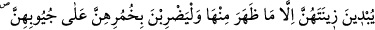
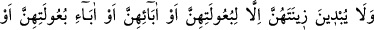
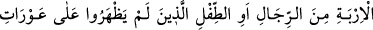

bakmaya ne demeli?”[148] buyrulmuştur. Bir hadiste ise şöyle buyrulmuştur: “Bana şu
altı şeyi yerine getireceğinize söz verin ben de size cenneti söz vereyim:
Konuştuğunuz zaman doğru söyleyin, verdiğiniz sözü tutun, size emânet edilen şeyleri
güzelce koruyup sâhiplerine verin, ırzlarınızı koruyun, gözlerinizi harama kapatın ve
başkalarına zarar vermekten elinizi tutun.”[149] Yine bir hadiste: “Bir adam namaz
kılarken önünden bir kadın geçti. Adam kadına dikkatlice baktığından iki gözü birden
kör oldu.”[150] buyrulmuştur.
Şeyh Necmüddîn et-Te’vîlât’ta şöyle der: Bu âyet zâhirdeki gözleri haramlardan,
nefis gözlerini dünyanın şehvetlerinden, tab‘ın ülfet ettiği şeylerden ve hevânın güzel
bulduğu hususlardan; kalb gözlerini amelleri ve âhiret nimetlerini görmekten; sır
gözlerini derecelerden ve mânevî yakınlıklardan; ruh gözlerini Allah’ın dışındaki
şeylere iltifattan, himmet gözlerini de nefislerini Hakk’ı müşâhedeye ehil görmemek
sûretiyle Hakk’a şevkinden, O’nu ta’zim ederek ve yücelterek illet ve sebeplerden tutup
kapatmaya işâret etmektedir. Yine zâhirdeki fercleri haramlardan; bâtındaki fercleri ise
dünyevî veya uhrevî bir maksadla iki dünyada tasarrufta bulunmaktan korumaya işâret
etmektedir.
Sonradan olmanın (hudûs) kirlerinden korumak ve hakların îfâsında nefsânî hazları işe
karıştırmamak üzere “bu, kendileri için daha temiz bir davranıştır. Şüphesiz Allah,
onların” hangi şeyleri hakları îfâ için, hangi şeyleri de hazları için “yapmakta
olduklarından haberdardır.”
Allah’ım! Bizi her ameli hukukuna riâyet ederek işleyenlerden kıl.
31. Mü’min kadınlara da söyle: Gözlerini (harama bakmaktan) korusunlar;
namus ve iffetlerini esirgesinler. Görünen kısımları müstesnâ olmak üzere,
ziynetlerini teşhir etmesinler. Başörtülerini, yakalarının üzerine (kadar) örtsünler.
Kocaları, babaları, kocalarının babaları, kendi oğulları, kocalarının oğulları, erkek